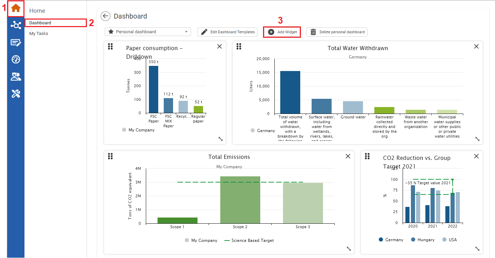
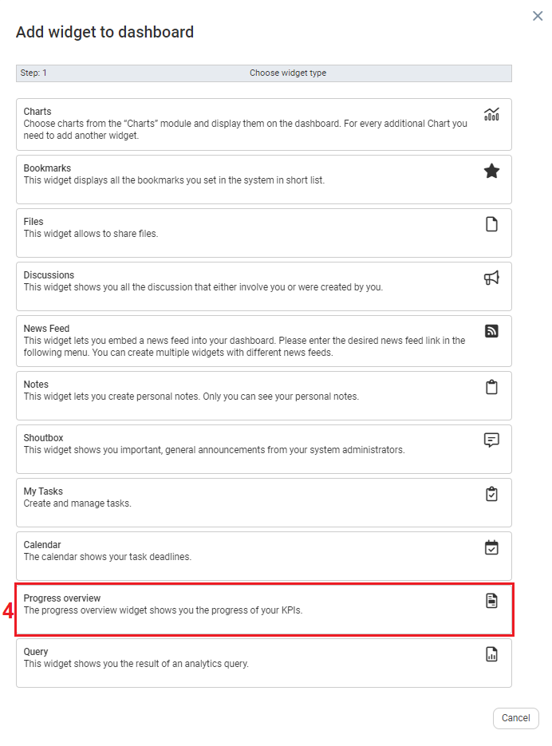
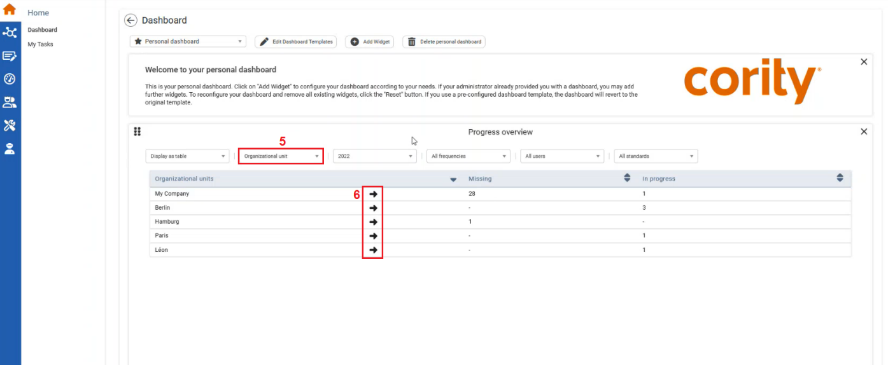

Navigating from the Progress Overview table to the Data Management System relevant to an organizational level, provides users visibility into the progress of data collection across a company. This will enable users to drill down into the data directly from the chart, reducing manual effort to locate specific metrics.
To Navigate from the Progress Overview table to the Data Management System

| 1 | On the left navigational panel, click the Home icon. The Home menu appears. |
| 2 | Click Dashboard. The Dashboard window appears. |
| 3 | Ensure the Progress Overview widget is added to your Dashboard, by clicking the Add Widget icon. The Widget to dashboard window opens |

| 4 | Click the Progress Overview widget. The widget is added to the dashboard. |

| 5 | On the Progress Overview widget, filter the table to display values in the form of Organizational unit. |
| 6 | To the right of the Organizational unit of interest, click the Arrow icon. The System will take you to the Data Management module with Data for the Organizational unit selected. |